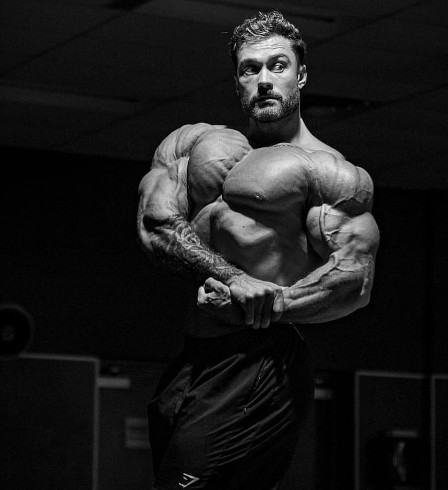
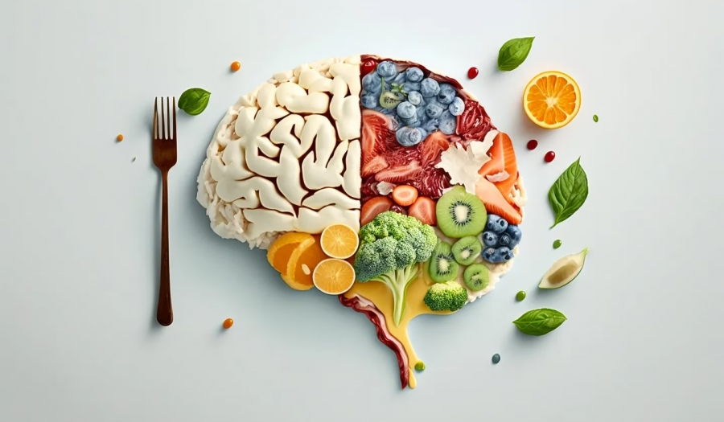
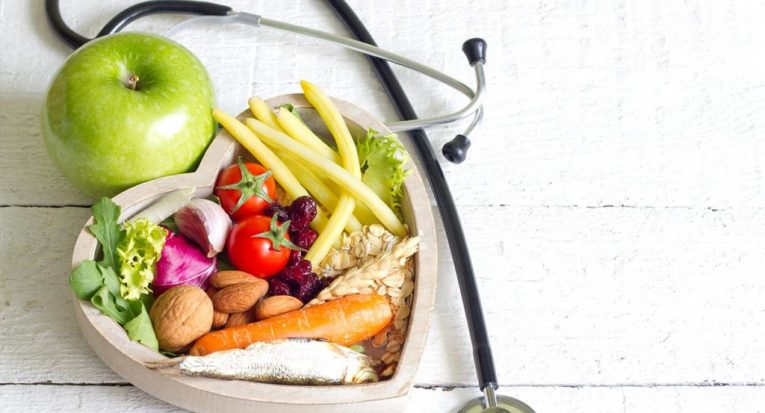
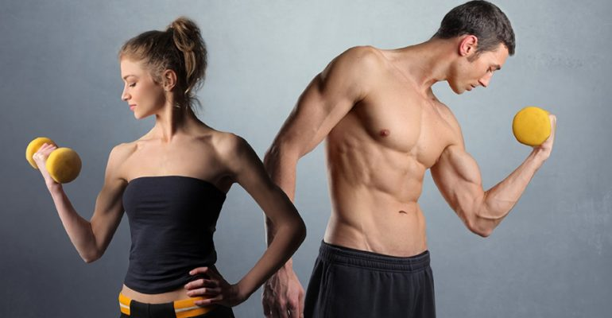

TRATAMENTOS

Para praticantes de atividades físicas.
Nutrição Esportiva
Para praticantes de atividades físicas.

Nutrição Online
Orientação nutricional para quem não tem tempo para consulta presencial.

A reeducação alimentar é uma ferramenta importante para emagrecer e manter o peso perdido (sem “efeito sanfona”), pois estimula a escolha de alimentos mais saudáveis para o resto da vida, e não apenas durante o período de dieta.
Reeducação alimentar
A reeducação alimentar é uma ferramenta importante para emagrecer e manter o peso perdido (sem “efeito sanfona”), pois estimula a escolha de alimentos mais saudáveis para o resto da vida, e não apenas durante o período de dieta.

Orientação nutricional para controle e tratamento de doenças crônicas.
Nutrição Funcional
Orientação nutricional para controle e tratamento de doenças crônicas.

Atendimentos para todos acima do peso. Emagrecimento e manutenção de peso de forma saudável, promovendo a saúde.
Emagrecimento
Atendimentos para todos acima do peso. Emagrecimento e manutenção de peso de forma saudável, promovendo a saúde.